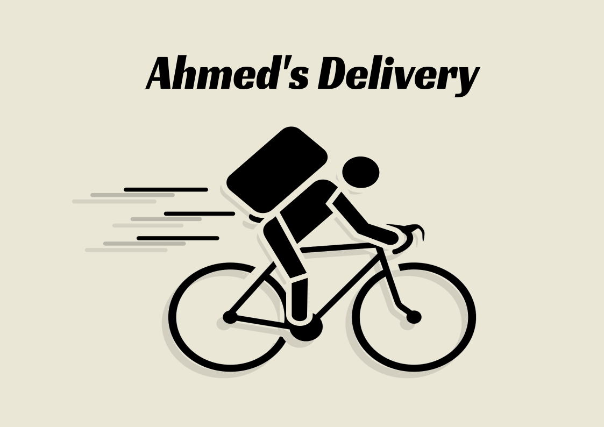

Ahmed's Delivery

As Salamu Alaikum. Welcome to Ahmed's Delivery Service's info page. We are a startup cycle-based delivery service inside Chittagong city. We ensure reliable, on-time delivery inside Chittagong city.
# The Reasoning
With the recent increase in traffic inside Chittagong city, mundane delivery tasks through four-wheeled vehicles(truck, van, car) that used to take around 15-20 minutes from G.E.C. to Oxygen nowadays takes around an hour or more. Cycle being a two-wheeled vehicle makes it very easy to cut through stagnant traffic and deliver products within a reasonable time. We conducted an experiment to compare delivery times between four-wheeled and two-wheeled vehicles during peak traffic hours. Our result suggest that, a cycle is by far more efficient in delivering on time(within reasonable distance) compared to a four-wheeled vehicle during peak hours.
# What items/packages do we deliver?
We deliver anything that's not above 5 kg. Anything below 5 kg is eligible for our riders to deliver. We also do not deliver glass bottle/drinks as they are more prone to breaking/spilliage. Our delivery items include(but not limited to);
- Any Official Documents
- Food/Eating Items(no open drinks)
- Anything non-fragile
- Medicine Items
- Groccery Items
Note: We also do not deliver packages/items worth more than 50,000 taka
# Working Hours
Our members(including myself) are currently employed/working at different jobs. So, below are our currently available delivery times;
- 9 am to 9:30 pm - Friday
- 3 pm to 9:30 pm - Sunday, Tuesday
- 3 pm to 5:30 pm - Saturday, Monday, Wednesday, Thursday
# Our Pricings and Delivery Areas
TK 50 delivery charge for any region that's within 6 km radius from our current rider's position. Anything after that, we add TK 20 per extra 1 Kilometer. Our delivery region is mainly city centered. Anything that's within 12 km range from G.E.C. is eligible for delivery.
Note: We also do not deliver to or from any region that's on the other side/opposite side of Karnaphuli river.
# Why not a bike/motorcycle?
Below is a simple comparison between cycle and motorbike delivery
| Criteria | Bicycle | Motorbike |
|---|---|---|
| Cost | Low maintenance fee, no fuel, no insurance, no license | Requires maintenance fee, fuel, insurance and license |
| Dexterity | Cycles can slip through congestions, use walking lane/footpath | Bikes can not follow up with that kind of dexterity |
| Parking Fee | No parking fee | A general parking fee is required |
| Environment Friendly | Yes | No |
| Long Distance Delivery | No | Yes |
| Heavy Load Deliveries | No | Yes |
We are eager to hear from you and hope that you include us in your projects
Made with <3 by samiulahmed using ssg